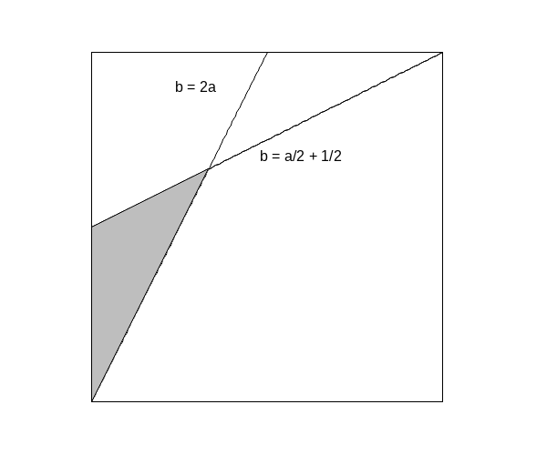

aez-notes
The Broken Bar
A bar is broken at random in two places. Find the average size of the smallest, of the middle-sized, and of the largest pieces.
Without loss of generality we can order the pieces by size and assume that the breaks occur at locations \(a\) and \(b\) on a bar of unit length with the conditions that
- \(a < b - a\) so that the first piece is smaller than the second,
- \(b - a < 1 - b\) so that the second piece is smaller than the third.
The distribution of \((a,b)\) is uniform over the permissible values,

Then we can just ask maxima to do the relevant integrals.
c : integrate(integrate(1, b, 2*a, (1 + a) / 2), a, 0, 1/3); print(c); /* 1 -- 12 */ mean_len(x) := integrate( integrate(x / c, b, 2*a, (1 + a) / 2), a, 0, 1/3 ); m_shortest_length : mean_len(a); print(m_shortest_length); /* 1 - 9 */ m_middle_length : mean_len(b-a); print(m_middle_length); /* 5 -- 18 */ m_longest_length : mean_len(1-b); print(m_longest_length); /* 11 -- 18 */ print(m_shortest_length + m_middle_length + m_longest_length); /* 1 */
So this just reduces to two integrals and the third once can be obtained from the results of the first two.
draw2d( fill_color = white, color = black, rectangle([0,0],[1,1]), color = black, line_type = dashes, label(["b = 2a", 0.3, 0.9]), explicit(2 * x, x, 0, 1/2), label(["b = a/2 + 1/2", 0.6, 0.7]), explicit(1/2 * (1 + x), x, 0, 1), explicit(1/2 * (1 + x), x, 0, 1), fill_color = grey, polygon([[0, 0], [0, 1/2], [1/3, 2/3]]), <<style-and-writeout>> )$
xrange = [-0.1,1.1], yrange = [-0.1,1.1], axis_bottom = false, axis_left = false, axis_top = false, axis_right = false, xtics = false, ytics = false, proportional_axes = 'xy, file_name = "problem-43", terminal = 'png